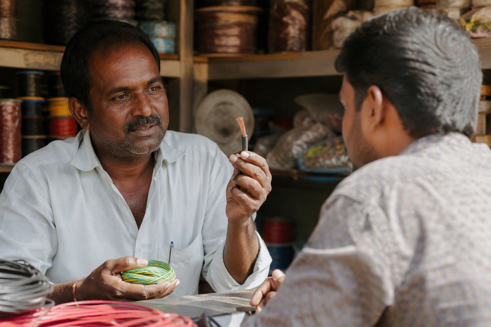

How to Find an Authorised Finolex Dealer in Karnataka (and Spot the Ones Who Aren't)

To find an authorised Finolex dealer in Karnataka, ask to see the brand authorisation certificate, insist on a GST invoice that names Finolex and the exact range, and then scan every QR code on every coil — the outer code on the carton and the inner code inside it. The scan is the only check that cannot be talked around.
Why this question is harder than it should be
Walk down any electrical market street in Bengaluru, Hubballi or Mysuru and you will see Finolex boards on a surprising number of shops. Some of those shops are authorised. Some buy from whoever offered the best price that month. Some are moving repacked cartons. The board outside tells you nothing about which.
We should be direct about our own position here, because it is relevant. Mount Cable India is one of the largest dealers and distributors of Finolex cables in the country, and we have sold Finolex in Bengaluru for 35 years. We would obviously like your order. But the advice below works against any seller including us, and that is the point — a check that only works on other people's stock is not a check.
What an authorisation certificate proves
Asking "are you an authorised Finolex dealer, and may I see the certificate?" is a reasonable question and any genuine seller will answer it without irritation. What the certificate establishes is a commercial relationship with the brand. It is worth having.
What it does not establish is what is in the carton in front of you. A firm can hold a legitimate authorisation for one product line and stock grey material alongside it. Certificates are also, unfortunately, easy to photocopy. Treat the certificate as necessary but nowhere near sufficient.
What a GST invoice proves
Insist that the invoice names the brand, the range, the size and the coil length on each line — "Finolex 90M Silver FR, 2.5 sq mm, 90 m" rather than "wire". This matters for two practical reasons: it is what makes a warranty claim possible, and it is what makes a complaint to Finolex traceable if the material turns out to be fake.
A seller who will bill you for "electrical items" without naming the brand has removed your only paper trail. Do not accept it, whatever the price.
The check that actually settles it
Certificates and invoices are about the seller. The QR codes are about the wire, and the wire is what goes in your wall.
| Code | Where it is | What it proves |
|---|---|---|
| Outer QR | Printed on the carton label with the size, grade, coil length and batch | That the carton was produced by Finolex and is registered with them |
| Inner QR | Inside the box, reachable only after the carton is opened | That the contents are what Finolex packed — the check a repacker cannot pass |
Both are needed. A genuine carton can be emptied and refilled with duplicate wire, and in that case the outer code still verifies perfectly while only the inner code fails. Stopping at the outer code is exactly what a repacker is relying on.
Scan both codes on every coil. Not the top box, not a sample of the delivery — every coil. It takes about twenty seconds each. The outer code should open Finolex's own verification portal, which sits at check.finolex.com, and the details it reports should match the size, grade, coil length and batch printed on the carton in front of you. A verification that reports "genuine" while describing a different size is not a pass.
The detailed mechanics are in scanning the outer code and scanning the inner code, and what to do if a code will not resolve is in QR code not scanning.
The four claims that should make you slow down
| What you hear | What it usually means |
|---|---|
| "We are the biggest Finolex dealer in this area" | Nothing. Size proves marketing budget, not supply chain. Ask for the certificate and scan the boxes |
| "Special rate today, 18% below market" | Genuine branded wire runs on a 3-5% dealer margin. There is no honest route to 18%. The gap is inside the coil |
| "Don't open the box, it will damage the packing" | The inner code is inside the box. This objection exists to prevent the one check that catches refilling |
| "Scan it at home, it will definitely show genuine" | Verification after payment is not verification. Scan before money moves |
If you are outside Bengaluru
The checks are identical in Mysuru, Mangaluru, Hubballi or Kalaburagi — they are properties of the carton, not of the city. What changes outside Bengaluru is convenience: fewer distributors, longer supply chains, and more intermediate hands between the factory and your site. That argues for scanning more carefully, not less.
If you would like a second opinion on material you have been offered anywhere in Karnataka, send photographs of the carton label, the QR codes and the wire markings to 88676 76700. We will tell you what we see whether or not you bought it from us. We would rather a house in Belagavi was wired correctly than win an argument about where the coils came from.
Where we fit
We supply Finolex from two showrooms in Bengaluru — Chickpete on BVK Iyengar Road and Jayanagar — with free next-day delivery across Bangalore and payment collected at your site after you have scanned the material. Across the rest of Karnataka we supply against a written quotation by road transport, with freight shown as a separate line. We have no branches or godowns outside Bengaluru and will not claim any. Full detail on the Finolex dealers in Karnataka page.
Buying Finolex anywhere in Karnataka? Mount Cable India is one of the largest dealers and distributors of Finolex cables in the country, working from two Bengaluru showrooms — Chickpete and Jayanagar. WhatsApp your list to 88676 76700 for an itemised quotation within 60 minutes. No obligation to buy: using it as a reference price to check someone else is a perfectly good reason to ask.
Frequently asked questions
How do I find an authorised Finolex dealer in Karnataka?
Does an authorisation certificate guarantee the wire is genuine?
Is a big Finolex showroom more trustworthy than a small shop?
What should a Finolex invoice say?
A dealer will not let me open a carton. Is that normal?
Can I get a second opinion on Finolex wire offered to me elsewhere in Karnataka?
Ready to order for your home?
Upload your wiring list for an instant quote — 100% original material, free next-day delivery across Bangalore.